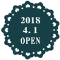

町の小さなギャラリーでおいしいお茶を
ワズカフェは2018年４月１日、名古屋市の植田駅から徒歩１００００分、静かな住宅街にある白い洋館に新しくオープンします。店内にはたくさんの素敵な絵や写真などが飾られています。おいしい食事をしながらお気に入りの一枚を探してみてください。
ご友人と、ご家族と、おひとりでゆっくりと過ごしていただける雰囲気のカフェです。
スタッフ一同、皆様のご来店をお待ちしております。
ワズカフェは2018年４月１日、名古屋市の植田駅から徒歩１００００分、静かな住宅街にある白い洋館に新しくオープンします。店内にはたくさんの素敵な絵や写真などが飾られています。おいしい食事をしながらお気に入りの一枚を探してみてください。
ご友人と、ご家族と、おひとりでゆっくりと過ごしていただける雰囲気のカフェです。
スタッフ一同、皆様のご来店をお待ちしております。